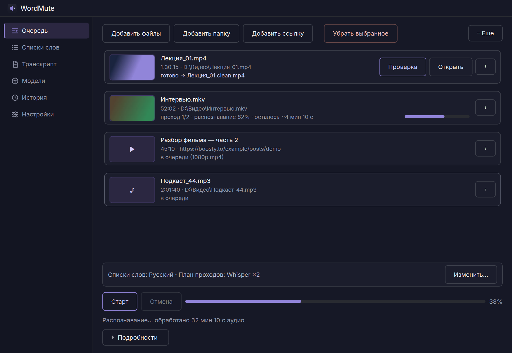
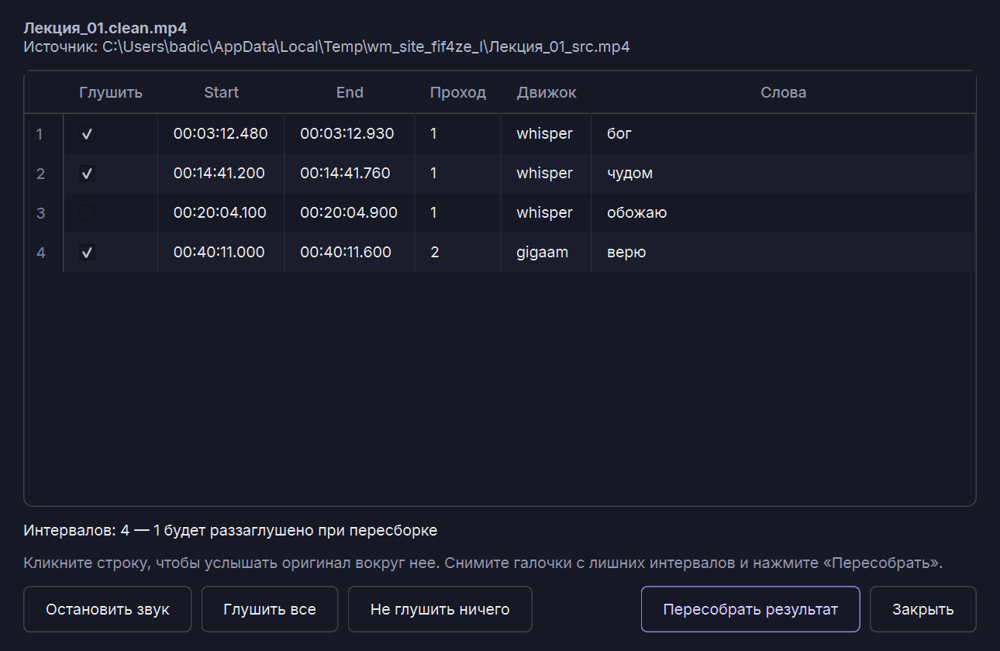
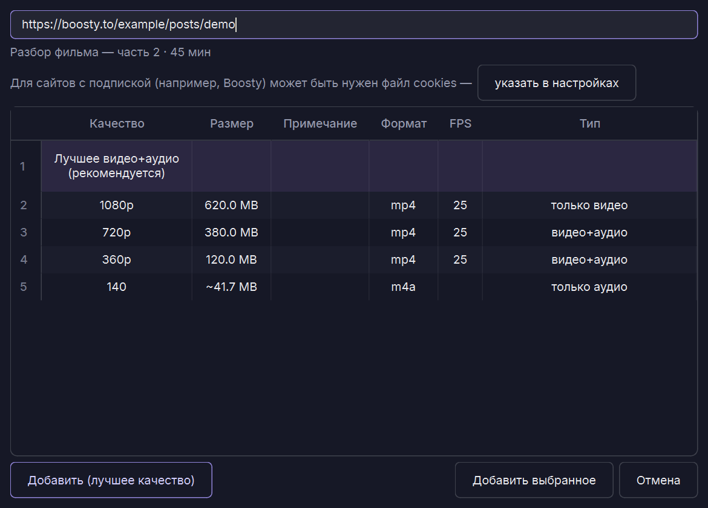
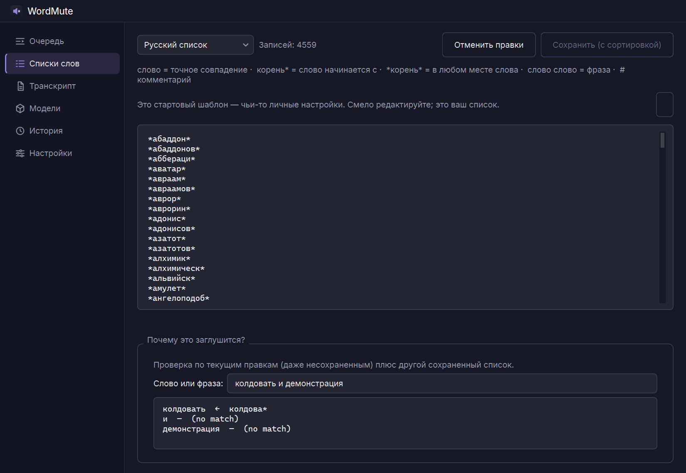

Нежелательные слова в видео — под заглушкой
WordMute распознаёт речь в аудиодорожке видео, находит слова из вашего списка и точечно заглушает их. Всё происходит на вашем компьютере — файлы никуда не отправляются.
Три шага от исходника до чистого видео
Речь превращается в текст
faster-whisper расшифровывает аудиодорожку с точными временными метками каждого слова — работает сразу после установки, без настройки. Для более точного распознавания русской речи можно дополнительно подключить GigaAM.
Сверка со списком слов
Расшифровка сравнивается со списком нежелательных слов. Поддерживаются точные слова, основы («корень*» — слово начинается с), вхождения («*корень*» — в любом месте слова) и целые фразы. Готовые словари уже включают словоформы — их можно свободно редактировать.
Точечная тишина
ffmpeg заглушает найденные сегменты в аудиодорожке, не трогая видеоряд и остальной звук. На выходе — тот же файл, но без нежелательных слов.
Что умеет WordMute
Экран проверки результата
После обработки видно каждое заглушенное слово: любое можно прослушать в один клик и снять заглушку с ложных срабатываний. Пересборка видео занимает секунды — без повторного распознавания.
Загрузка видео по ссылке
Вставьте ссылку — YouTube, VK Видео и другие площадки, — выберите качество из списка форматов, и видео обработается сразу после скачивания. Закрытые видео по подписке (например, Boosty) работают через файл cookies.
Полностью локально
Обработка идёт на вашем компьютере — файлы никуда не отправляются. Интернет нужен только для установки, скачивания моделей и загрузки видео по ссылкам.
GigaAM для русской речи
По умолчанию работает faster-whisper — настраивать ничего не нужно. GigaAM — опциональный экспериментальный компонент (~3,5 ГБ) для более точного русского распознавания; нужна разовая бесплатная настройка аккаунта Hugging Face, мастер в приложении проведёт по шагам.
Русский и английский
Интерфейс и готовые словари на обоих языках. Словари уже включают словоформы, и их можно редактировать под себя.
Ускорение на GPU
С видеокартой NVIDIA распознавание работает в разы быстрее. Без GPU тоже работает — просто дольше.
Свои списки слов
Редактируйте словари под себя: добавляйте и убирайте слова, программа подхватит изменения.
Видео остаётся нетронутым
Меняется только аудиодорожка в найденных сегментах. Качество видео и остального звука не страдает.
Как выглядит WordMute




Системные требования
Скачайте WordMute
Установщик лёгкий — около 150 МБ. При первом запуске приложение само скачает нужные компоненты (Python-окружение, распознавание Whisper, yt-dlp, ffmpeg): от ~0,4 ГБ для работы на процессоре до ~2,5 ГБ для GPU. При первой обработке дополнительно загрузится модель распознавания (~3 ГБ).
Скачать для WindowsНажмите кнопку, откройте любой ИИ-ассистент (ChatGPT, Claude, DeepSeek…), вставьте скопированный текст, а следом опишите свою проблему — ассистент проведёт вас по установке шаг за шагом.
Показать инструкцию
Тот же файл есть в репозитории: docs/INSTALL_GUIDE.md